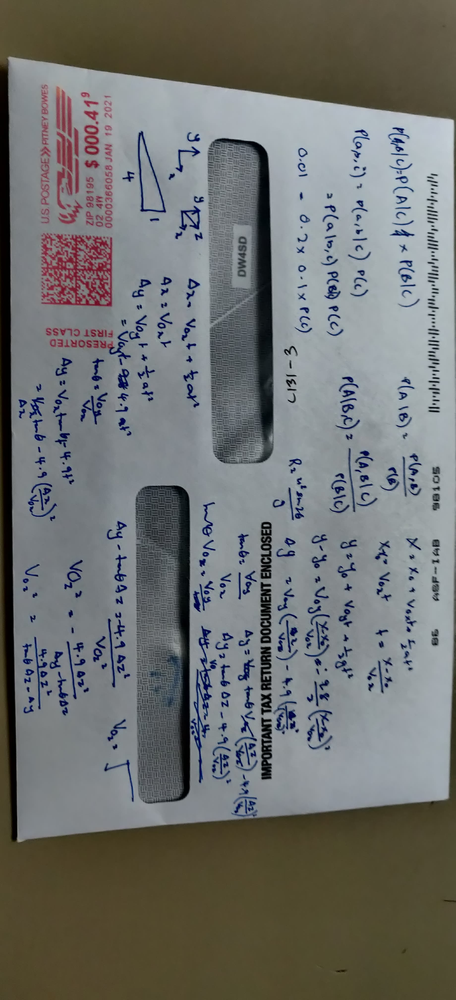
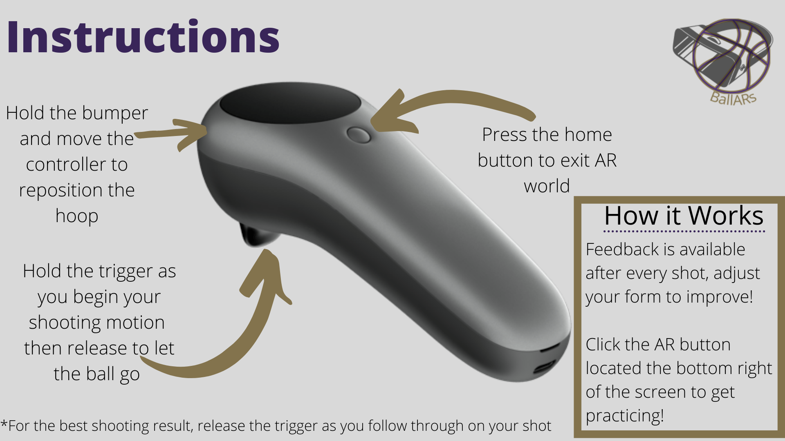

Everyone's Progress
CJ Lin:
- Implement invisible walls for better in-game feedback
- Looked into getting BallARs application to work in VR
- Working with Peter and Luyang to implement 3D model feedback
Peter Michael:
- Successfully implemented retargeting by modifying VIBE code
- Working with CJ and Luyang to implement 3D model feedback
Yan Zhe Ong:
- Refactored the current shooting mechanism and fine tune variables
Jasmine Woon:
- Designed and added the new overlay
- Successfully implemented hoop reposition that allows for real time tracking of the controller
Updates on Code
CJ and Peter have been working hard to implement feedback from 3D pose estimation. They have been going to Luyang's office hours and collobrating together. The current code will record the user's actions when they start and stop shooting. To trigger the recording, an HTTP request is sent to the GPU when the player starts and stops shooting. Next, the GPU will run the VIBE algorithm and showcase a 3D model that minics the player's movements.
Yan spent time refactoring code on shooting and attempting to solve complex kinematics equations. In addition, the shooting mechanism no longer takes in 20 frame and instead uses 5 frames. According to our opinion, we beleive there's much improvement to the shooting mechanism but we can still fine tune this shooting algorithm.
 basic player rig
This past week Jasmine has been looking at shooting and moving the hoop more smoothly. She spent most of her efforts on trying to get the hoop to move smoothly. Look how smooth moving the hoop has become!
Moving hoop
Updates on Ideas
Originally, we planned to make a main menu page. However, after re-evaluating on the design and functionality, our menu did not serve a good purpose. So we decided to go with the overlay approach instead. Jasmine spent time this weekend to design a new overlay. Check it our below
 Old Overlay Designed by CJ
Old Overlay Designed by CJ
 New Instructions Overlay Designed by Jasmine
We have less than a week to go and BallARs are trying to warp up!
Plan for Next Week
Everyone:
- Start integrating and test all components before shooting a video next thursday.
CJ Lin:
Goals for Monday 5/31
- Work with Peter to add feedback from the 3D pose estimation
- Place mesh and feedback box into the AR enviroment
Peter Michael:
Goals for Monday 5/31
- Work with CJ to add feedback from the 3D pose estimation
- Be able to read body rotation feedback
Yan Zhe Ong:
Goals for Monday 5/31
- Continue to fine tune the shooting mechanism
- Assist Jasmine to add a feature that keeps track of the hoop
Jasmine Woon:
Goals for Monday 5/31
- Assist Yan to fine tune shooting
- Create an arrow that continuously point to the hoop
- Look into adding animations
Blocking Issues
One blocking issue we have is how can we test our application for a quest or hololens device. CJ looked into playing BallARs on a Quest2 but he wasn't able to shoot a basketball. Though this is not a huge concern for us because we have been heavily using Magic Leap Device, we wondered how did VR teams from MVP day played our application.